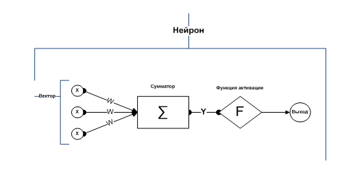
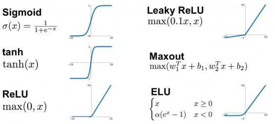

Главная

База:
Методы машинного обучения:
Алгоритмы машинного обучения:
Классификация.
Типы нейронных сетей.
Алгоритмы.
Функции активации:
- Ступенчатая функция активации
- Функция Ферми (экспоненциальная сигмоида)
- Рациональная сигмоида ()
- Гиперболический тангенс (TanH) от -1 до +1
- ReLu возвращает значение х, если х положительно, и 0 в противном случае
Библиотеки Python :
- NumPy (для работы с матрицами)
- Pandas (для работы с табличными данными)
- Matplotlib (для работы отображения данных в графическом виде)